Chapter 4 Image processing
One key decision in your spotcalling script is choosing how to process your images. Here, we will cover the image processing functions that masmr provides, and how users may string together these functions for their own purposes.
library(masmr)
library(ggplot2)## Warning: package 'ggplot2' was built under R version 4.3.24.1 Pre-processing
As before, specify your parameters.
data_dir = 'C:/Users/kwaje/Downloads/JIN_SIM/20190718_WK_T2_a_B2_R8_12_d50/'
establishParams(
imageDirs = paste0(data_dir, 'S10/'),
imageFormat = '.ome.tif',
codebookFileName = list.files(paste0(data_dir, 'codebook/'), pattern='codebook', full.names = TRUE),
codebookColumnNames = paste0(rep(c(0:3), 4), '_', rep(c('cy3', 'alexa594', 'cy5', 'cy7'), each=4) ),
outDir = 'C:/Users/kwaje/Downloads/JYOUT/',
dapiDir = paste0(data_dir, 'DAPI_1/'),
pythonLocation = 'C:/Users/kwaje/AppData/Local/miniforge3/envs/scipyenv/',
fpkmFileName = paste0(data_dir, "FPKM_data/Jin_FPKMData_B.tsv"),
nProbesFileName = paste0(data_dir, "ProbesPerGene.csv"),
verbose = FALSE
)## Assuming .ome.tif is extension for meta files...Image processing is handled within your spotcalling script, and consequently requires some pre-processing to have been done prior to looping through images. These are provided below (kindly refer to Chapter 3 for details).
## Necessary pre-processing done before your loop
readImageMetaData()## Warning in readImageMetaData(): Updating params$fov_namesprepareCodebook()
getAnchorParams()
establishCleanSlate()## [1] ".Random.seed" "data_dir" "params"## Specify the current FOV (done inside the loop)
params$current_fov <- params$fov_names[38]
## Read the images for your current FOV (done inside loop)
imList <- readImageList( params$current_fov )4.2 Building blocks of image processing
The backbone of MERFISH pipelines is image processing. We provide several options, which we will showcase with the test image below. Note the use of imager::as.cimg, which converts image matrices to .cimg objects that are read by C++; so doing allows for rapid manipulation and plotting.
ALWAYS plot to check how your image processing has altered your image!
im <- imList[[1]]
par(mfrow=c(1,2))
plot( imager::as.cimg(im), main = 'Unaltered image' )## Warning in as.cimg.array(im): Assuming third dimension corresponds to
## time/depthhist( im, breaks=1000, main = 'Unaltered image', xlab='Intensities', ylab='N pixels' )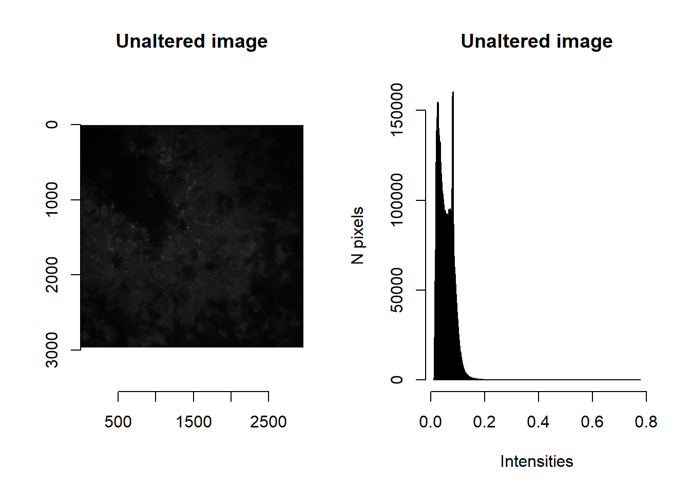
par(mfrow=c(1,1))imNormalise
Note the range of raw intensities. We can use imNormalise to perform a quick min-max normalisation so that values span 0 to 1.
norm <- imNormalise(im)
par(mfrow=c(1,2))
plot( imager::as.cimg(norm), main = 'Min-max image' )## Warning in as.cimg.array(norm): Assuming third dimension corresponds to
## time/depthhist( norm, breaks=1000, main = 'Min-max image', xlab='Intensities', ylab='N pixels' )par(mfrow=c(1,1))Since we previously calculated min and max brightnesses, we may wish to winsorise intensity values (i.e. values trimmed to lie between min and max brightness). As before, we can use imNormalise but this time specifying the desired floor and ceiling values. [When these are unspecified, floor and ceiling values are defaulted to minimum and maximum intensities observed in the image, thereby performing a min-max normalisation.]
norm <- imNormalise(im, floorVal = params$brightness_min[1], ceilVal = params$brightness_max[1] )
par(mfrow=c(1,2))
plot( imager::as.cimg(norm), main = 'Winsorised image' )## Warning in as.cimg.array(norm): Assuming third dimension corresponds to
## time/depthhist( norm, breaks=1000, main = 'Winsorised image', xlab='Intensities', ylab='N pixels' )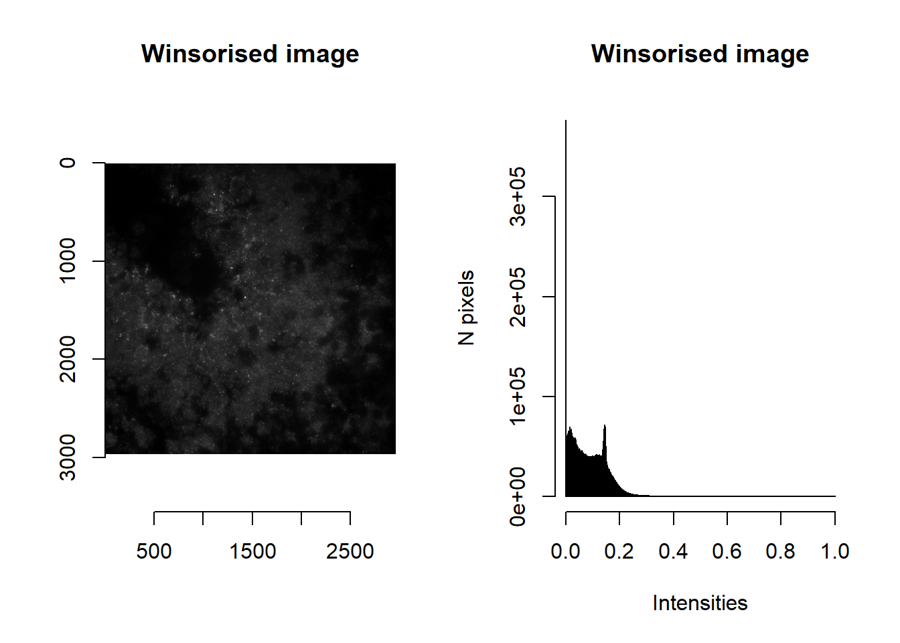
par(mfrow=c(1,1))imAutobrighten
Brightening an image is accomplished by raising the intensities (that lie between 0 and 1) to some power \(x\), that maximises the distance between two user-specified values (\(floor\) and \(ceiling\)). The optimal \(x\) is found by solving:
\[\begin{align} \frac{d}{dx}\left(ceiling^x - floor^x\right) = 0 \\ ceiling^x \log{ceiling} - floor^x \log{floor} = 0 \\ x = \frac{\log{ \frac{\log{ceiling}}{\log{floor}}} }{ \log{\frac{floor}{ceiling}} } \end{align}\]
Note that imAutoBrighten will only be valid if floor is more than 0 and ceiling is less than 1.
This is the basis of the imAutoBrighten function.
norm <- imAutoBrighten(im, floorVal = params$brightness_min[1], ceilVal = params$brightness_max[1] )
par(mfrow=c(1,2))
plot( imager::as.cimg(norm), main = 'Autobrightened image' )## Warning in as.cimg.array(norm): Assuming third dimension corresponds to
## time/depthhist( norm, breaks=1000, main = 'Autobrightened image', xlab='Intensities', ylab='N pixels' )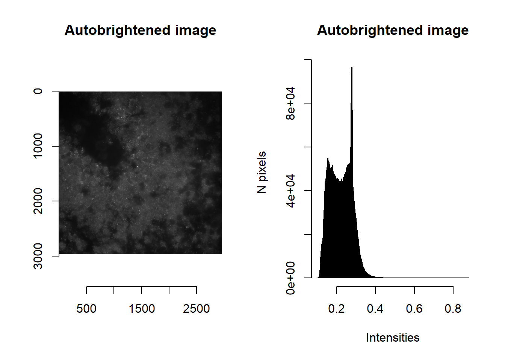
par(mfrow=c(1,1))imLaplacianOfGaussian
The difference of Gaussian blurs (i.e. Laplacian of Gaussians, LoG) is useful for correcting for uneven lighting or blob detection. This is accomplished by subtracting an image that has been slightly blurred (determined by the smallBlur parameter) from an image that is blurrier (bigBlur).
norm <- imLaplacianOfGaussian(im, smallBlur = 1, bigBlur = 5 )
par(mfrow=c(1,2))
plot( imager::as.cimg(norm), main = 'Laplacian of Gaussians' )## Warning in as.cimg.array(norm): Assuming third dimension corresponds to
## time/depthplot( imager::as.cimg(norm[1000:1500, 1000:1500, 1]), main = 'Laplacian of Gaussians (Zoom in)' )par(mfrow=c(1,1))Values that are less than 0 are those dimmer that their immediate surroundings. Spots are typically brighter than their surroundings, and so typically have LoG > 0.
norm <- imLaplacianOfGaussian(im, smallBlur = 1, bigBlur = 5 )
norm <- imNormalise(norm, 0, max(norm))
par(mfrow=c(1,2))
plot( imager::as.cimg(norm), main = 'Laplacian of Gaussians >0' )## Warning in as.cimg.array(norm): Assuming third dimension corresponds to
## time/depthplot( imager::as.cimg(norm[1000:1500, 1000:1500, 1]), main = 'Laplacian of Gaussians >0 (Zoom in)' )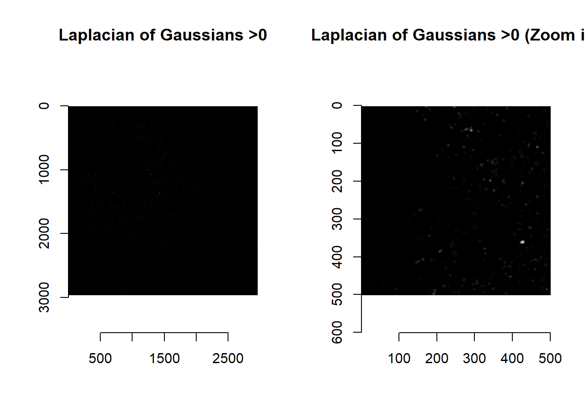
par(mfrow=c(1,1))imHessianDeterminant
The Hessian is a symmetric matrix containing second-order partial derivatives (i.e. gradient of gradients). In the context of images, it is a matrix of how intensity values are changing as we move along rows and columns of the image matrix. The determinant of the Hessian (detHess) is frequently used for blob detection – we have thus created a function that calculates its value:
norm <- imHessianDeterminant(im, smallBlur = 1)
par(mfrow=c(1,2))
plot( imager::as.cimg(norm), main = 'detHess' )## Warning in as.cimg.array(norm): Assuming third dimension corresponds to
## time/depthplot( imager::as.cimg(norm[1000:1500, 1000:1500, 1]), main = 'detHess' )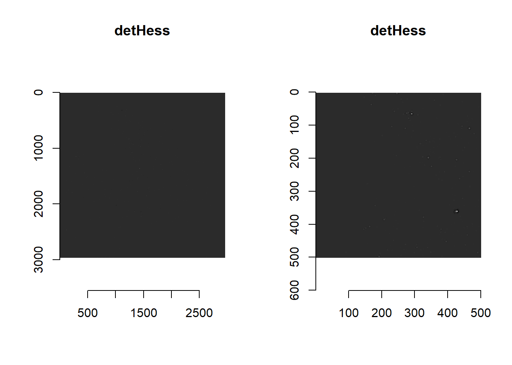
par(mfrow=c(1,1))Thresholding detHess values are a quick way of detecting puncta:
norm <- imHessianDeterminant(im, smallBlur = 1)
norm <- norm>quantile(norm, 0.99) ##99 percentile of values
par(mfrow=c(1,2))
plot( imager::as.cimg(norm), main = 'detHess thresholded' )## Warning in as.cimg.array(norm): Assuming third dimension corresponds to
## time/depthplot( imager::as.cimg(norm[1000:1500, 1000:1500, 1]), main = 'detHess thresholded (Zoom in)' )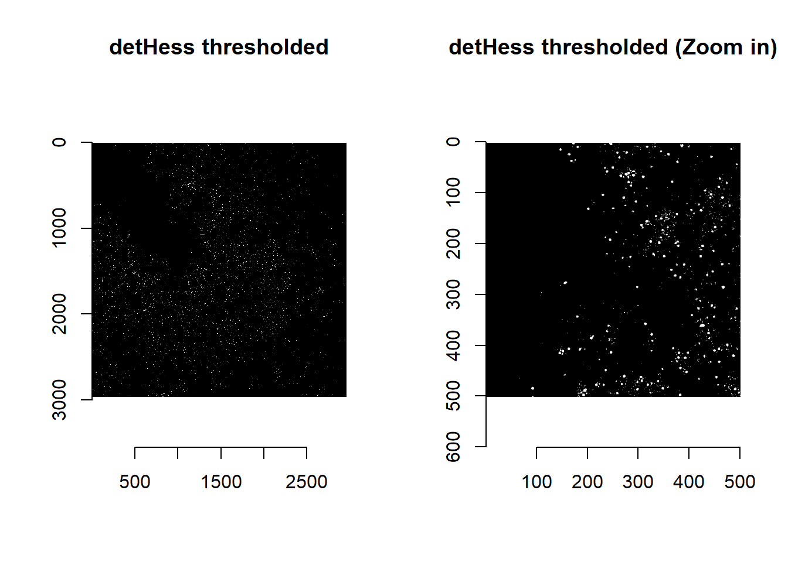
par(mfrow=c(1,1))Attentive readers would have noticed that there is a smallBlur parameter (default = 1) in the imHessianDeterminant function. This blur serves to denoise the image, so that detHess values are meaningful.
par(mfrow=c(1,3))
plot( imager::as.cimg(im[1200:1300, 1200:1300, 1]), main = 'Intensities (Zoom in): No blur' )
plot( imager::as.cimg(imHessianDeterminant(im[1200:1300, 1200:1300, 1], smallBlur = 0)), main = 'detHess (Zoom in): No blur' )
plot( imager::as.cimg(imHessianDeterminant(im[1200:1300, 1200:1300, 1], smallBlur = 1)), main = 'detHess (Zoom in): Slight blur' )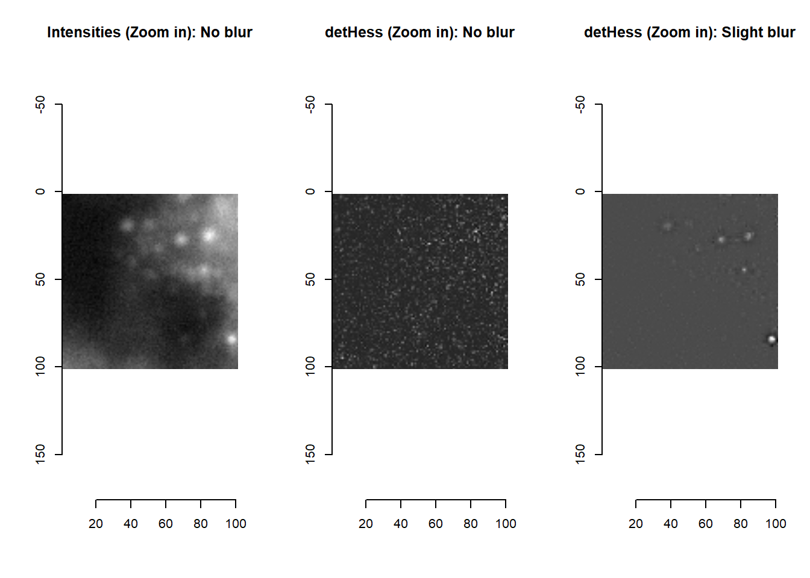
par(mfrow=c(1,1))4.3 Combining building blocks
Using the building blocks above, and any relevant functions from imager or EBImage, users can create complex image processing pipelines. Below is an example of a composite function imLowPass created using a combination of imNormalise, image blurring, and imAutoBrighten.
masmr::imLowPass## function (im, smallBlur, currentIteration, ...)
## {
## if (!missing(currentIteration)) {
## message(currentIteration, appendLF = F)
## }
## if (missing(smallBlur)) {
## smallBlur = 1
## }
## background <- imNormalise(im, ...) == 0
## imblur <- array(imager::isoblur(suppressWarnings(imager::as.cimg(im)),
## smallBlur), dim = dim(im))
## lowthresh <- median(imblur[background])
## hithresh <- median(imblur[!background & (imblur > lowthresh)])
## if (((lowthresh > 0) & (hithresh < 1) & (lowthresh < hithresh) &
## !is.na(lowthresh) & !is.na(hithresh))) {
## norm <- imAutoBrighten(imblur, floorVal = lowthresh,
## ceilVal = hithresh)
## }
## else {
## warning(paste0("Skipping imAutoBrighten because of invalid floorVal (",
## lowthresh, ") and/or ceilVal (", hithresh, ")..."))
## norm <- imblur
## }
## norm <- imNormalise(norm)
## return(norm)
## }
## <bytecode: 0x0000017c8be37d50>
## <environment: namespace:masmr>ALWAYS plot to check how your image processing has altered your image!
norm <- imLowPass(im, floorVal = params$brightness_min[1], ceilVal = params$brightness_max[1] )
par(mfrow=c(1,2))
plot( imager::as.cimg(norm), main = 'Low pass' )## Warning in as.cimg.array(norm): Assuming third dimension corresponds to
## time/depthhist( norm, breaks=1000, main = 'Low pass', xlab='Intensities', ylab='N pixels' )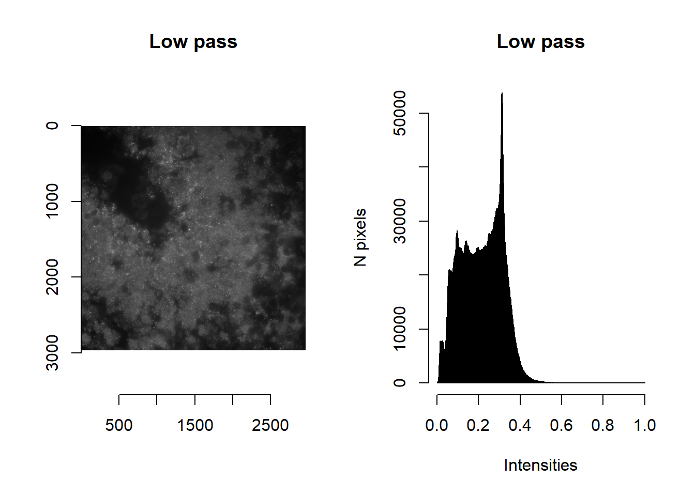
par(mfrow=c(1,1))4.4 Building your own function: an example
Users are strongly encouraged to experiment with the provided image processing functions and create their own image processing pipelines if necessary. Below, we provide an example of how a custom function may be built.
Say we are dissatisfied with the current default masking function (imForMask), whose purpose is to flag pixels where we suspect a spot to be, as being too restrictive (i.e. only flagging the strongest signals).
## The original image is a bit too dim for visualisation: but will provide here for completeness
plot(imager::as.cimg( imList[[1]][1000:1500, 1000:1500, 1] ), main='Original')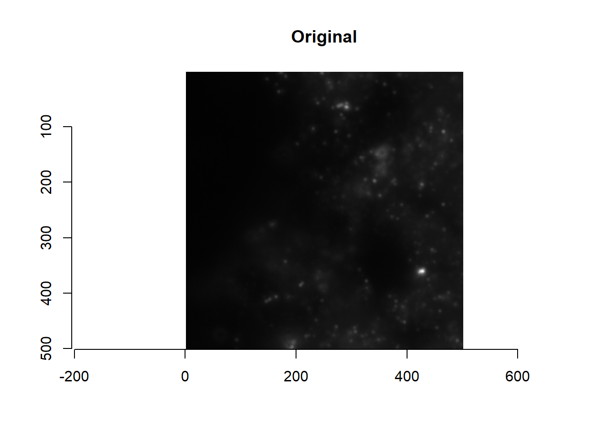
par(mfrow=c(1,2))
plot(imager::as.cimg( imList[[1]][1000:1500, 1000:1500, 1]^0.1 ), main='Original (brightened)')
plot(imager::as.cimg( imForMask(imList[[1]])[1000:1500, 1000:1500, 1] ), main='Default mask')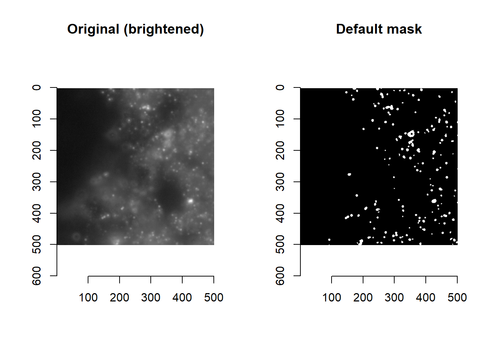
par(mfrow=c(1,1))First, let’s have a look at what imForMask is doing. From below, we see that it takes in a single image im and…
- Low pass filtering of an image with the
imLowPassfunction: returninglowpass - Calculates the determinant of the Hessian (
imNormalise %>% imHessianDeterminant %>% isoblur): returningdethessb - Calculates the Laplacian of the Gaussian (
imNormalise %>% imLaplacianOfGaussian): returningLoG - Masking of
LoGanddethessbby identifying appropriate thresholds (findThreshold) - Scoring of pixels between 0 and 1 using the product of
lowpassandLoG, with saturated pixels (norm==1orim==1) being set to max score - Flagging saturated pixels (
im==1), pixels with superthresholdLoG, or pixels with superthresholddethessb: returninglab(1if yes to any of the three criteria, otherwise0) - Finding the threshold for scores calculated in step (5) that separate
1and0fromlabin step 6: returningmask - Size filter of
maskto remove masks smaller thanminBlobSizepixels
masmr::imForMask## function (im, smallBlur, minBlobSize, currentIteration, ...)
## {
## if (!missing(currentIteration)) {
## message(currentIteration, appendLF = F)
## }
## if (missing(smallBlur)) {
## smallBlur = 1
## }
## if (missing(minBlobSize)) {
## minBlobSize = 9
## }
## norm <- imNormalise(im, ...)
## lowpass <- imLowPass(norm, ...)
## dethess <- imHessianDeterminant(norm, ...)
## dethess <- imNormalise(dethess)
## dethessb <- array(imager::isoblur(suppressWarnings(imager::as.cimg(dethess)),
## smallBlur), dim = dim(im))
## vals <- dethessb[dethessb > quantile(dethessb, 0.95)]
## dethessbFloor <- findThreshold(vals, method = thresh_Elbow,
## ...)
## LoG <- imLaplacianOfGaussian(norm, ...)
## LoGthresh <- findThreshold(LoG[LoG > 0], method = thresh_Elbow,
## ...)
## vals <- imNormalise(lowpass * imNormalise(LoG, floorVal = LoGthresh,
## ceilVal = max(LoG)))
## vals[((im >= 1) + (norm >= 1)) > 0] <- 1
## lab <- ((LoG > LoGthresh) + (dethessb > dethessbFloor) +
## (im == 1)) > 0
## thresh <- findThreshold(vals, method = thresh_Quantile, labels = lab,
## ...)
## mask <- vals > thresh
## labmask <- EBImage::bwlabel(mask)
## toosmall <- which(tabulate(labmask) < minBlobSize)
## mask[labmask %in% toosmall] <- F
## return(mask)
## }
## <bytecode: 0x0000017c8c1fa7b8>
## <environment: namespace:masmr>Next, let’s create a new mask function that will be more permissive and flag more pixels. This myCustomMask function is created from copying and editing the default imForMask function above. Briefly, this new function replaces steps 5-7 in the default imForMask function with the union of multiple masks.
[Note: the use of ellipsis (...) is to allow the passing arguments in myCustomMask to functions within myCustomMask: e.g. imLaplacianOfGaussian, imHessianDeterminant etc.]
myCustomMask <- function (im, smallBlur, minBlobSize, currentIteration, ...){
if (!missing(currentIteration)) {
message(currentIteration, appendLF = F)
}
if (missing(smallBlur)) {
smallBlur = 1
}
if (missing(minBlobSize)) {
minBlobSize = 9
}
## Old code: Calculate scores per pixel as per the default imForMask function
norm <- imNormalise(im, ...)
lowpass <- imLowPass(im, ...)
dethess <- imHessianDeterminant(norm, ...)
dethess <- imNormalise(dethess)
dethessb <- array(imager::isoblur(suppressWarnings(imager::as.cimg(dethess)),
smallBlur), dim = dim(im))
vals <- dethessb[dethessb > quantile(dethessb, 0.95)]
dethessbFloor <- findThreshold(vals, method = thresh_Elbow,
...)
LoG <- imLaplacianOfGaussian(norm, ...)
LoGthresh <- findThreshold(LoG[LoG > 0], method = thresh_Elbow,
...)
## New code: also get LoG values for the lowpass image
LoGLowPass <- imLaplacianOfGaussian(norm * lowpass)
LoGthreshLowPass <- findThreshold(LoG[LoG > 0], method = thresh_Elbow, ...)
## New code: Union of masks
mask <-
(LoG>LoGthresh) + #LoG of original image above threshold
(LoGLowPass>LoGthreshLowPass) + #LoG of lowpass image above threshold
(dethessb>dethessbFloor) + #detHess above threshold
(im==1) #Saturated pixels
mask <- mask > 0 #Inclusive Or
allmask <- mask
## Old code: Filter out masks that are too small
labmask <- EBImage::bwlabel(mask)
toosmall <- which(tabulate(labmask) < minBlobSize)
mask[labmask %in% toosmall] <- F
final <- mask
## If function ready, just return final
# return(final)
## If troubleshooting, return all intermediate images
processedImages <- list(
'Norm' = norm,
'LowPass' = lowpass,
'detHess' = dethessb,
'detHess masked' = dethessb>dethessbFloor,
'LoG' = LoG,
'LoG masked' = LoG>LoGthresh,
'LowPass LoG' = LoGLowPass,
'LowPass LoG masked' = LoGLowPass>LoGthreshLowPass,
'All masks' = allmask,
'Masks after size filter' = mask
)
return( processedImages )
}
processedImages <- myCustomMask( imList[[1]] )
par(mfrow=c(5,2))
for( imMetricName in names(processedImages) ){
plot(imager::as.cimg( processedImages[[imMetricName]][1000:1500, 1000:1500, 1] ), main = toupper(imMetricName) )
}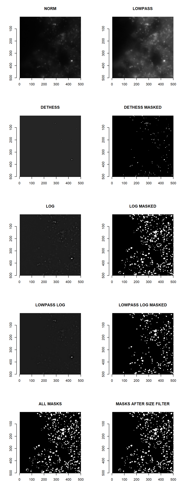
par(mfrow=c(1,1))When satisfied with the custom function, returning intermediate images can be skipped:
myCustomMask <- function (im, smallBlur, minBlobSize, currentIteration, ...){
if (!missing(currentIteration)) {
message(currentIteration, appendLF = F)
}
if (missing(smallBlur)) {
smallBlur = 1
}
if (missing(minBlobSize)) {
minBlobSize = 9
}
## Calculate scores per pixel as per the default imForMask function
norm <- imNormalise(im, ...)
lowpass <- imLowPass(im, ...)
dethess <- imHessianDeterminant(norm, ...)
dethess <- imNormalise(dethess)
dethessb <- array(imager::isoblur(suppressWarnings(imager::as.cimg(dethess)),
smallBlur), dim = dim(im))
vals <- dethessb[dethessb > quantile(dethessb, 0.95)]
dethessbFloor <- findThreshold(vals, method = thresh_Elbow,
...)
LoG <- imLaplacianOfGaussian(norm, ...)
LoGthresh <- findThreshold(LoG[LoG > 0], method = thresh_Elbow,
...)
## New: also get LoG values for the lowpass image
LoGLowPass <- imLaplacianOfGaussian(norm * lowpass)
LoGthreshLowPass <- findThreshold(LoG[LoG > 0], method = thresh_Elbow, ...)
## Union of masks
mask <-
(LoG>LoGthresh) + #LoG of original image above threshold
(LoGLowPass>LoGthreshLowPass) + #LoG of lowpass image above threshold
(dethessb>dethessbFloor) + #detHess above threshold
(im==1) #Saturated pixels
mask <- mask > 0 #Inclusive Or
allmask <- mask
## Filter out masks that are too small
labmask <- EBImage::bwlabel(mask)
toosmall <- which(tabulate(labmask) < minBlobSize)
mask[labmask %in% toosmall] <- F
final <- mask
## If function ready, just return final
return(final)
## If troubleshooting, return all intermediate images
# processedImages <- list(
# 'Norm' = norm,
# 'LowPass' = lowpass,
# 'detHess' = dethessb,
# 'detHess masked' = dethessb>dethessbFloor,
# 'LoG' = LoG,
# 'LoG masked' = LoG>LoGthresh,
# 'LowPass LoG' = LoGLowPass,
# 'LowPass LoG masked' = LoGLowPass>LoGthreshLowPass,
# 'All masks' = allmask,
# 'Masks after size filter' = mask
# )
# return( processedImages )
}
par(mfrow=c(1,2))
plot(imager::as.cimg( imList[[1]][1000:1500, 1000:1500, 1]^0.1 ), main='Original (brightened)')
plot(imager::as.cimg( myCustomMask(imList[[1]])[1000:1500, 1000:1500, 1] ), main='Custom mask')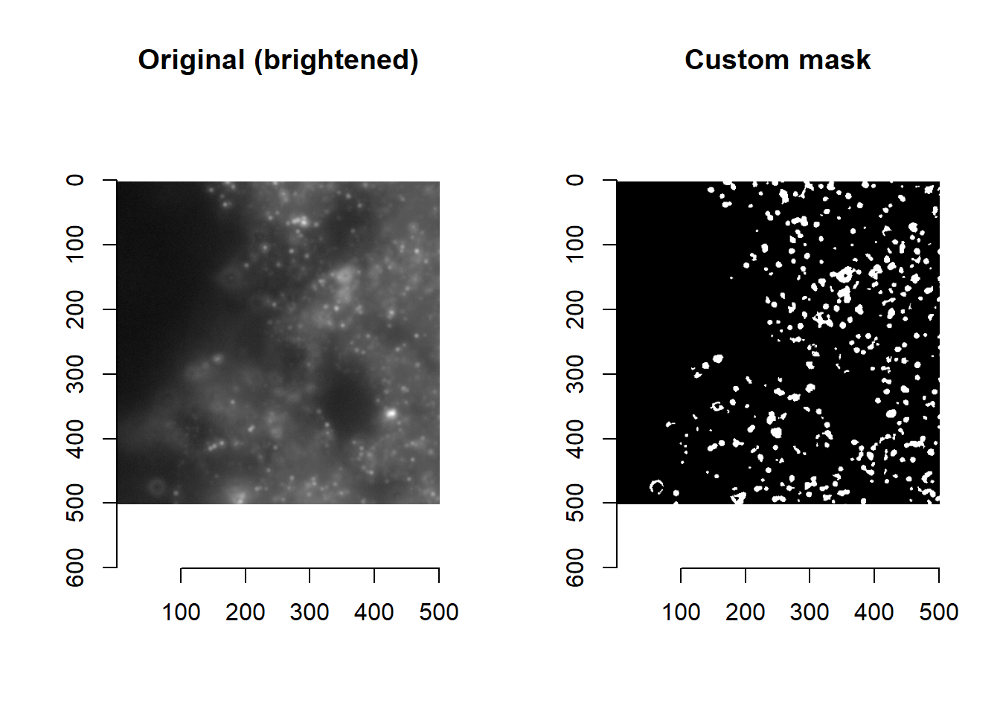
par(mfrow=c(1,1))Voila! A new custom masking function.
Having explained how to create a custom function, we will discuss how these custom functions can be looped through their image list.
4.5 Feeding image processing pipelines into getImageMetrics
By listing looping functions in a named list imageFunctions (much like what is done for getAnchorParams), users can perform different types of image processing using our getImageMetrics function. The result is a new environment object (imMetrics) that houses image lists that have been processed in different ways. As default, the following image processing is performed:
ORIG: unprocessed images.NORM: images that have been min-max normalised.COARSE: low-pass images, optimised to separate foreground from background.DECODE: images that have been optimised for decoding.MASK: images where pixels worth bringing forward for decoding have been masked asTRUE.
getImageMetrics(
imList,
imageFunctions = list(
'ORIG' = imReturn,
'NORM' = imWinsorIntensities,
'COARSE' = imLowPass,
'DECODE' = imForDecode,
'MASK' = imForMask
))ALWAYS plot to check how your image processing has altered your image!
par(mfrow=c(2,3))
for( imMetricName in ls(imMetrics) ){
plot(imager::as.cimg( imMetrics[[imMetricName]][[1]][1000:1500, 1000:1500, 1] ), main = imMetricName)
}
par(mfrow=c(1,1))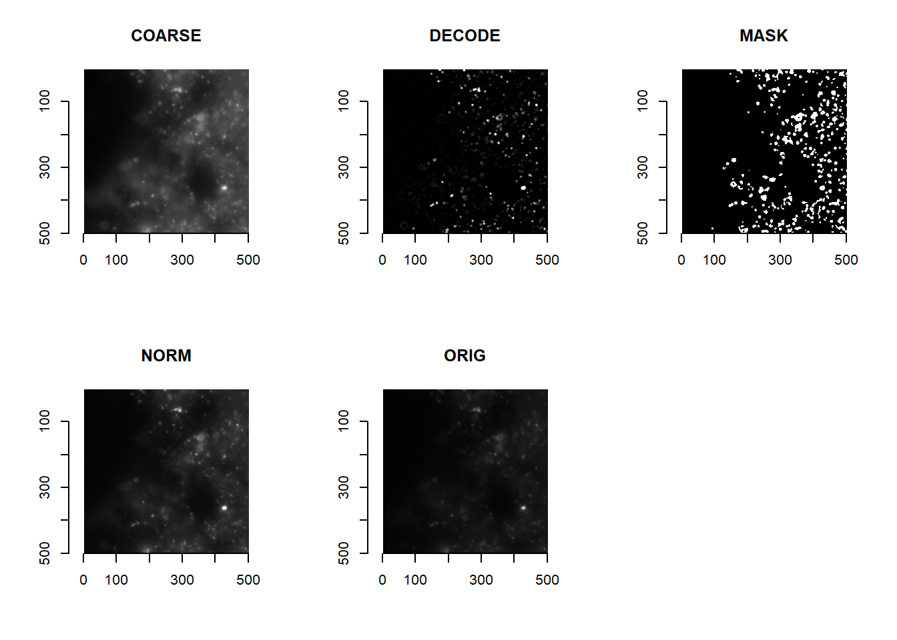
Users can do the same, and visualise how their function performs on one FOV. When satisfied, that custom function can be looped through all images in the imList with getImageMetrics:
userCustomFunction <- function( im ){
## User to decide on how they want the image to be processed
...
}
## Loop the custom function across all images
getImageMetrics(
imList,
imageFunctions = list(
'ORIG' = imReturn,
'NORM' = imWinsorIntensities,
'COARSE' = imLowPass,
'DECODE' = imForDecode,
'MASK' = imForMask,
'CUSTOM' = userCustomFunction #New function (or replace one of the above with your new function)
))It is important to note that imMetrics$MASK will determine which pixels are brought forwards for decoding during the later consolidateImageMetrics function; and that decoding will be performed on imMetrics$DECODE. The DECODE and MASK metrics should thus be the image processing pipelines that users should focus on when optimising.
If users want to decode on the whole image (which may be memory intensive), removing MASK from imMetrics (an example below), or creating a imMetrics$MASK with TRUE for every pixel will work. In so doing, spotcalling will only depend on the DECODE images.
myCustomMask <- function(im){
return( im > -Inf ) #Return TRUE for every pixel
}
getImageMetrics(
imList,
imageFunctions = list(
'ORIG' = imReturn,
'NORM' = imWinsorIntensities,
'COARSE' = imLowPass,
'DECODE' = imForDecode,
'MASK' = myCustomMask #User replacing the mask function
))
## Alternatively, users can remove the MASK
imMetrics$MASK <- NULLExperiment and find what works for your dataset. Don’t forget to make use of functions like filterDF and spotcall_troubleshootPlots to help you troubleshoot (see Chapter 3).
Users are encouraged to optimise their image processing pipelines on one FOV, before applying the same pipelines to all other FOVs.